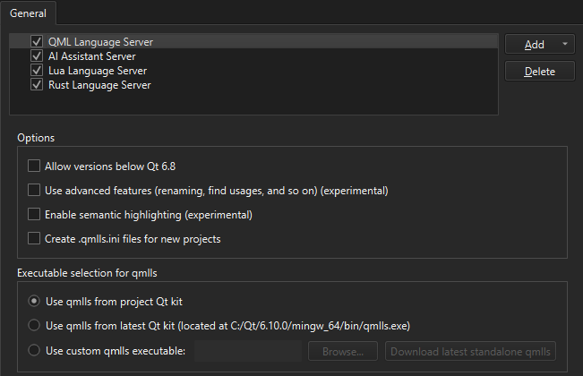

Configure QML Language Server
Since Qt 6.4, QML Language Server offers code completion and issues warnings for QML.
To set preferences for QML Language Server, go to Preferences > Language Client > General and select QML Language Server.

Turn off QML Language Server for all projects
To globally turn off QML Language Server, clear the QML Language Server checkbox.
For more information about how to turn on and off language servers for a particular project, see Configure language servers for projects.
Use advanced features
By default, QML Language Server issues warning messages and provides code completion, while the embedded code model handles advanced features, such as renaming symbols and finding usages.
To disable the embedded code model and use QML Language Server for everything, select Use advanced features.
Select QML Language Server version
To use QML Language Server shipped with the Qt version in your current kit, select Use qmlls from project Qt kit. This is the default option.
To always use QML Language Server of the highest registered Qt version, select Use qmlls from latest Qt kit.
To use older QML Language Server versions, select Allow versions below Qt 6.8.
To use a specific QML Language Server version, set the path to the executable in Use custom qmlls executable. To download the latest QML Language Server version, select Download latest standalone qmlls.
Automatically configure new CMake projects
To automatically configure new CMake projects, select Create .qmlls.ini files for new projects.
See also How To: Manage Language Servers, Enabling and Disabling Messages, CMake Build Configuration, Kits, and Language Servers.